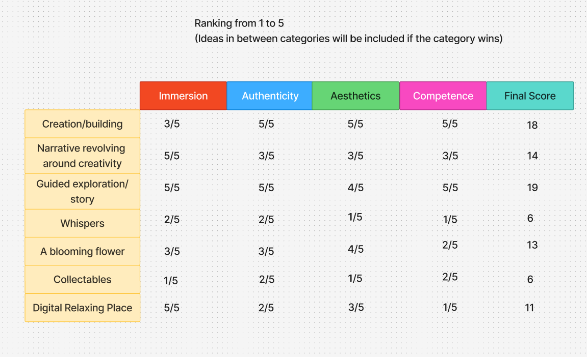
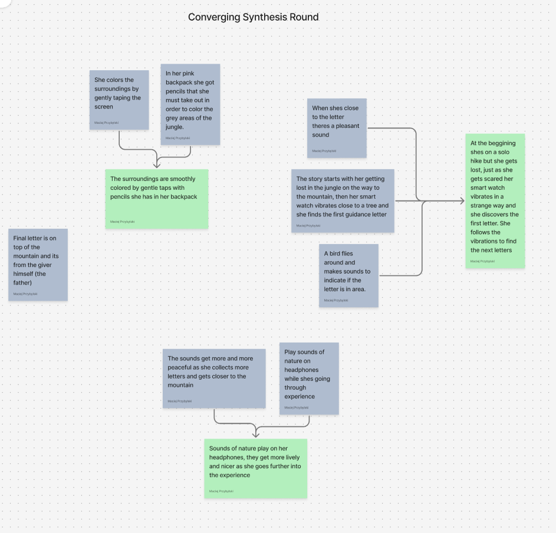

Ideation
After having gathered a sufficient amount of information about my user, we began the process of ideation. In total we gathered 40 ideas each (total 120 ideas) after which we converged on our own. In my case I converged to the top 3 ideas using certain criterias by which I judged each idea.

After that I took the two ideas that felt the most fitted to my user's personality and merged them into one.

Finally it was time to come up with the final concept and a storyboard that would become the basis of our future design.